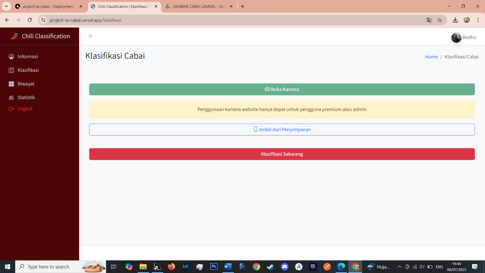
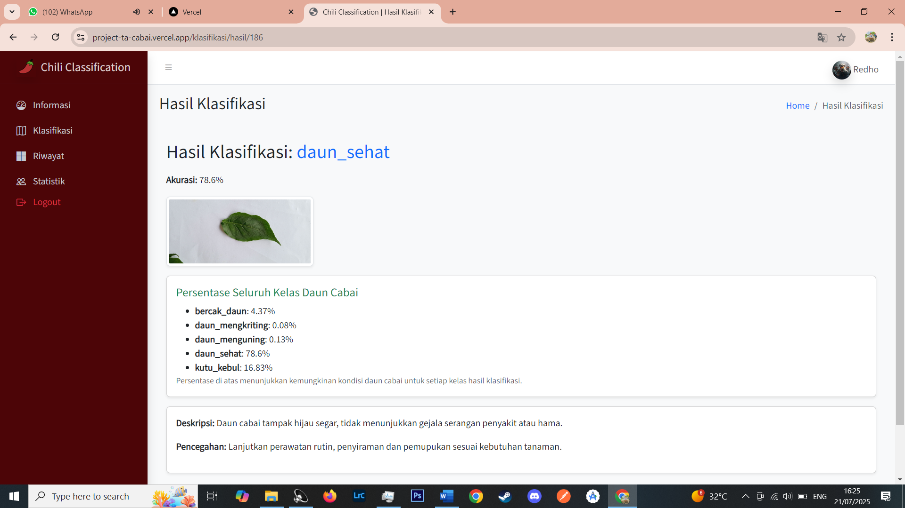

Website Klasifikasi Penyakit Daun Cabai
Sistem klasifikasi penyakit daun cabai menggunakan CNN, Flask API, dan Laravel.
Tentang Proyek
Proyek ini adalah sistem klasifikasi penyakit daun cabai berbasis kecerdasan buatan dengan metode CNN. Pengguna mengunggah gambar daun cabai, lalu sistem memberikan hasil klasifikasi secara otomatis.
Model yang dipakai dilatih lebih dulu di Google Colab. Prosesnya ada di halaman model MobileNetV2.
Alur Sistem
- Unggah gambarPengguna memilih foto daun cabai di website Laravel.
- Kirim ke APILaravel meneruskan gambar ke Flask API.
- KlasifikasiModel CNN memprediksi kelas penyakit pada daun.
- Hasil dan riwayatHasil, saran pencegahan, dan riwayat tersimpan di database.
Screenshot Aplikasi

Halaman Upload Gambar

Hasil Klasifikasi

Riwayat Klasifikasi
Teknologi yang Digunakan
Python
TensorFlow
CNN
Flask API
Laravel
MySQL
Fitur
- Upload gambar daun cabai
- Klasifikasi otomatis menggunakan CNN
- Menampilkan hasil prediksi dan saran pencegahan
- Riwayat klasifikasi
- Integrasi Laravel dan Flask API